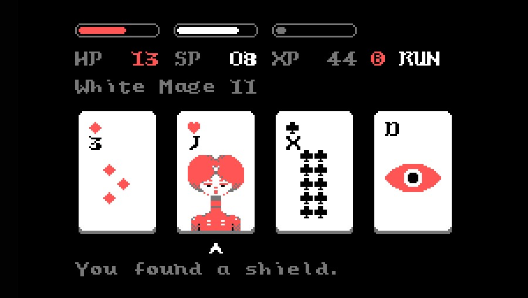

donsol
introduction
Donsol is a dungeon crawler card game played with a standard 54 card deck.
Buy Donsol | $5.00 USDPlayable on any OS, as well as GBA, NDS, PSP, Playdate, etc. The Donsol ROM download comes with an instruction booklet, which includes new art as well as printable assets for the Famicom-style box and cart.
production
Donsol, short for Dungeon Solitaire was designed by John Eternal, during train jam in 2015, it was later made into an iOS game with Devine. It was released in April 2015 on the app store. The game was in turn ported to all desktop platforms.
In 2018, we removed the game from the iOS store, in a conscious attempt to distance ourselves from the Apple ecosystem. After looking at the trajectory of the development tools, namely the bloated development environment, we did not believe that it was possible for us to continue working on our games, while at sea with little connectivity for the Apple mobile platform.
We also could not reconcile pushing for environmentally conscious action, while supporting a company that fights against the Right to Repair, and create wasteful products. Instead, the game was published exclusively on the Itch.io store, a publishing platform in line with our values.

In 2020 Donsol re-written entirely in 6502 assembly, sold as a digital ROM and playable with an emulator. The iOS version of the game is no longer sold/supported.
In October 2021 the Donsol Famicom(6502) code was ported to Varvara(Uxn) as an experiment to see how translating register-machine assembly to stack-machine would be like.

The Donsol playing manual is 18 pages long, and features some new art along with some instuctions and hints on how to play the game.

how to play
A standard deck of 54 cards, jokers included, is a dungeon. Shuffle the deck and draw 4 cards, display them before you, this is a room. A room ends when all the cards are folded.
♥︎ Heart Potions
A potion gives you health points equal to its value, up to a maximum of 21 health points.
Drinking multiple potions in a row will make you sick and result in no extra healing, only the first potion's value will be gained in HP. Potions are equal to their value and face cards (J,Q,K,A) each are equal to 11.
♦ Diamond Shields
A shield absorbs the damage difference between the shield value and that of the attacked monster's value.
Shields can only defend against monsters in descending value and if you use a shield on a monster with higher or equal value to the previous, it will break. Broken shields leave you unarmored, and you take full damage. Folding shield card will always replace a previously equipped shield. Shields are equal to their value and face cards (J,Q,K,A) each are equal to 11.
♣♠ Club/Spades Monsters
Monster cards are equal to their value, and face cards are as follows J is 11, Q is 13, K is 15, A is 17; Jokers are both equal to 21.
You may escape a room. When escaping, the remaining cards are put back at the end of the deck. A player is allowed to escape a room:

- Easy Mode: When all monsters in the room have been dealt with, or when the player has not escaped the previous room.
- Normal Mode: Only when the player has not escaped the previous room.
- Hard Mode: Only when all monsters in the room have been dealt with.
screenshots